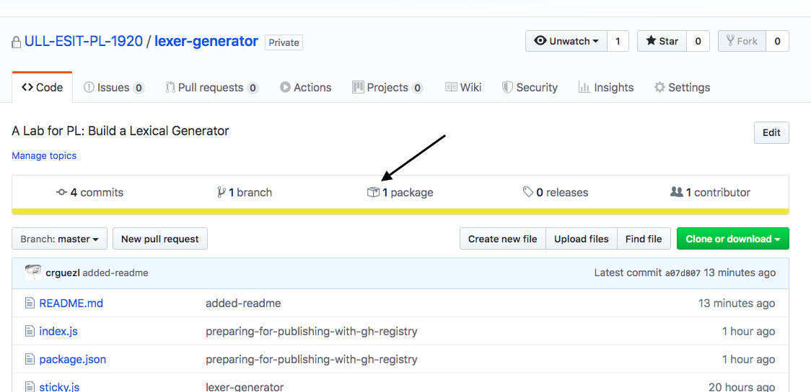
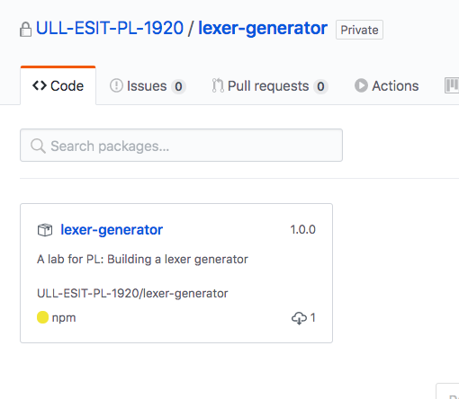
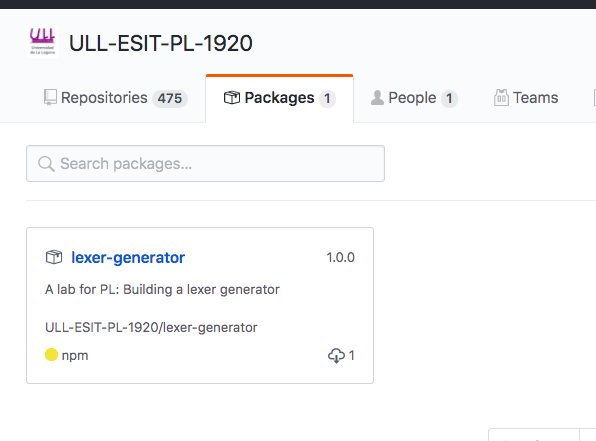

Creating and Publishing a Node.js Module in GitHub and NPM Registries
Creating a node module and publishing it to npm is a fairly straightforward process. Haven’t done it yet? Not sure what I’m talking about? Here’s a quick tutorial to speed you along.
What is npm?
NPM has three components. These components consist of
- the npm website,
- the Command Line Interface (CLI), and
- an online database of public and private packages called the npm registry
npm is an online registry for open-source node.js projects, modules, resources, etc. You can find it at https://www.npmjs.com/.
npm is also the official package manager for node.js, and provides a
command line interface (CLI) for interacting with the registry. This
utility comes bundled with node.js and is installed automatically. For
API documentation, visit https://docs.npmjs.com/ or just type npm in
your terminal.
For you ruby devs, npm is akin to rubygems.
Don’t have node.js installed?
You’ll of course need to install node.js and npm in order to follow along. Try one of the following install options or just read along.
- Homebrew users can simply run
brew install node - Download a binary from http://nodejs.org/
- Use Node Version Manager (NVM) – recommended
Configure npm
Let’s get started by configuring npm a little bit. Go ahead and enter these commands in a terminal, using your own information. This way, when we run some npm commands later, it will already know who we are and will be able to autocomplete some information for us.
npm set init.author.name "Casiano Rodriguez-Leon"
npm set init.author.email "whatever@gmail.com"
npm set init.author.url "https://github.com/crguezl"
This next command will prompt you for an email and password, create or verify a user in the npm registry, and save the credentials to the
~/.npmrc file.
npm adduser
another way to register in npm is using the npm web interface
Here is an example of .npmrc file
➜ create-a-npm-module git:(master) ✗ cat .npmrc-example
//registry.npmjs.org/:_authToken=00000000000
init.author.name=Casiano Rodriguez-Leon
init.author.email=whatever@gmail.com
init.author.url=https://github.com/crguezl
access=public
@ull-esit-dsi-1617:registry=https://registry.npmjs.org/
//10.6.128.127:8081/:_password="blahblahencrypted"
//10.6.128.127:8081/:username=crguezl
//10.6.128.127:8081/:email=whatever@gmail.com
//10.6.128.127:8081/:always-auth=false
@ULL-ESIT-PL-1920:registry=https://npm.pkg.github.com
@ull-esit-pl-1920:registry=https://npm.pkg.github.com
//npm.pkg.github.com/:_authToken=0000000111111etc.
@PAL-ULL:registry=https://npm.pkg.github.com
@pal-ull:registry=https://npm.pkg.github.com/
What are scopes?
Scopes are like namespaces for npm packages. Each npm user has their own scope.
@username/project-name
This means that you don’t have to worry about someone else taking your package name. Only you can add packages in your scope.
Scoped modules also make it possible to put your private code on npm when you sign up for private modules. With private modules, you have control over who can see and collaborate on any of the modules in your scope (but you have to paid for it. Public scoped packages are free).
To create a scoped package, all you need to do is add your scope to the front of the name property in package.json
{
"name": "@ull-esit-dsi-1617/scapegoat",
"version": "1.3.11",
...
}
and run npm with the access option:
npm publish --access=public
What is Github Registry?
GitHub Package Registry is a software package hosting service, similar to npmjs.org, rubygems.org, or hub.docker.com, that allows you to host your packages and code in one place. You can host software packages privately or publicly and use them as dependencies in your projects.
Setting a Token
You need an access token to publish, install, and delete packages in GitHub Packages. You can use a personal access token to authenticate with your username directly to GitHub Packages or the GitHub API. You can use a GITHUB_TOKEN to authenticate using a GitHub Actions workflow.
When you create a personal access token, you can assign the token different scopes depending on your needs. For more information, see “Creating a personal access token for the command line” and “Available scopes” in the GitHub Developer documentation.
Go to your GitHub user’s settings, from there navigate to Developer Settings, then to Personal access tokens
https://github.com/settings/tokens
Select Generate new token and give the token the appropriate permits:
| Scope | Description | Repository permissions |
|---|---|---|
read:packages |
Download and install packages from GitHub Packages | read |
write:packages |
Upload and publish packages to GitHub Packages | write |
delete:packages |
Delete specified versions of private packages from GitHub Packages | admin |
repo |
Install, upload, and delete certain packages in private repositories (along with read:packages, write:packages, or delete:packages) |
read, write, or admin |
Once you get the token run npm login against the GitHub Registry:
$ npm login --registry=https://npm.pkg.github.com
> Username: USERNAME
> Password: TOKEN
> Email: PUBLIC-EMAIL-ADDRESS
Write/paste the token in the password field:
$ npm login --registry=https://npm.pkg.github.com
Username: crguezl
Password:
Email: (this IS public) crguezl@ull.edu.es
Logged in as crguezl on https://npm.pkg.github.com/.
This will append lines like these in your ~/.npmrc configuration file:
@ULL-ESIT-PL-1920:registry=https://npm.pkg.github.com
//npm.pkg.github.com/:_authToken=<your-token>
Create a node module
A Node/npm module is just an ordinary JavaScript file with the addition that it must follow the CommonJS module spec.
Node modules run in their own scope so that they do not conflict with other modules.
Node relatedly provides access to some globals to help facilitate module interoperability.
The primary two items that we are
concerned with here are require and exports.
You require other
modules that you wish to use in your code and your module exports
anything that should be exposed publicly.
For example:
let other = require('other_module');
module.exports = function() {
console.log(other.doSomething());
}
For our demo, we’ll create an npm module consisting of a couple utility methods for escaping and unescaping HTML entities – commonly needed utils to prevent cross site scripting (XSS) attacks when rendering user generated content.
We’ll call this project, ‘Scapegoat’, because a quick search of the npm registry reveals that the name has not yet been taken.
Note that if you are coding along with me, and plan to publish your module to npm, without scope, you’ll need to give your module a unique name.
To get started, We create a new repository on our Github account (or on a organization) and then cloned it locally.
git clone git@github.com:brentertz/scapegoat.git
cd scapegoat
package.json
Executing the following command will create an unscoped package.json file:
npm init -f
Have a look to see what the file contains; it is pretty human-readable.
Further details and explanation of the contents of the package.json file
can be found at https://docs.npmjs.com/files/package.json.
Our initial version looks like the following, but we’ll be updating this further as we go along.
{
"name": "scapegoat",
"version": "0.0.0",
"description": "A small library providing utility methods to escape and unescape HTML entities",
"main": "index.js",
"scripts": {
"test": "echo "Error: no test specified" && exit 1"
},
"repository": {
"type": "git",
"url": "git://github.com/brentertz/scapegoat.git"
},
"keywords": [
"escape",
"unescape",
"html"
],
"author": "Brent Ertz <brent.ertz@gmail.com> (http://brentertz.com/)",
"license": "BSD-2-Clause",
"bugs": {
"url": "https://github.com/brentertz/scapegoat/issues"
}
}
For scoped modules, run npm init --scope=@scope-name. For example npm init --scope=@aluXXX
- Read the blog Create a project using the
npm init initializercommand by Elijah Manor for more information onnpm init - esm
index.js: Write the code
Now we can actually get on to the business of writing code. Create an
index.js file to hold the primary module code. It’ll look something
like the following.
Note the use of module.exports, which we
discussed previously, and is needed to make code available for use by
other modules. Further, as our module is not reliant on any other
modules, we did not need to require anything.
/**
* Escape special characters in the given string of html.
*
* @param {String} html
* @return {String}
*/
module.exports = {
escape: function(html) {
return String(html)
.replace(/&/g, '&')
.replace(/"/g, '"')
.replace(/'/g, ''')
.replace(/</g, '<')
.replace(/>/g, '>');
},
/**
* Unescape special characters in the given string of html.
*
* @param {String} html
* @return {String}
*/
unescape: function(html) {
return String(html)
.replace(/&/g, '&')
.replace(/"/g, '"')
.replace(/'/g, ''')
.replace(/</g, '<')
.replace(/>/g, '>');
}
};
Testing with Mocha and Chai
Next, we’ll surely want to write some tests. Perhaps it would have been
preferable to write them first. Here we are going to use the
Mocha and
Chai frameworks. There are others you can use, like Jest.
Mocha and Chai can be installed and persisted to the package.json file
with the following commands. Note that they are added to the
‘devDependencies’ section, as they are only required during development
and not at runtime.
npm install mocha --save-dev
npm install chai --save-dev
.gitignore
The above commands will also create a node_modules folder in your
project directory containing those dependencies. Following best
practices, we’ll want to keep the node_modules folder out of the git
repository.
We can do that by adding a .gitignore file to our project
root, with the following contents:
node_modules
To build a .gitignore see also http://gitignore.io/.
The npm install command also created package-lock.json containing a detailed description of all the dependences. We add this file to the control version:
git add package-lock.json
package-lock.json describes the exact tree that was generated, such that subsequent installs are able to generate identical trees, regardless of intermediate dependency updates.
Writing the tests
Continuing on, let’s create a test directory to hold our tests.
As our
primary module file is called index.js, within the test directory I
will create a file by the same name – a simple convention.
Mocha will by default run all tests in this directory. Our test should look something like the following.
Note that I am using the should syntax
provided by the Chai framework. Also note the use of require to pull
in our module code into the test.
var should = require('chai').should(),
scapegoat = require('../index'),
escape = scapegoat.escape,
unescape = scapegoat.unescape;
describe('#escape', function() {
it('converts & into &', function() {
escape('&').should.equal('&');
});
it('converts " into "', function() {
escape('"').should.equal('"');
});
it('converts ' into '', function() {
escape(''').should.equal(''');
});
it('converts < into <', function() {
escape('<').should.equal('<');
});
it('converts > into >', function() {
escape('>').should.equal('>');
});
});
describe('#unescape', function() {
it('converts & into &', function() {
unescape('&').should.equal('&');
});
it('converts " into "', function() {
unescape('"').should.equal('"');
});
it('converts ' into '', function() {
unescape(''').should.equal(''');
});
it('converts < into <', function() {
unescape('<').should.equal('<');
});
it('converts > into >', function() {
unescape('>').should.equal('>');
});
});
Running the tests
But how do we actually run the tests?
$ cat package.json
{
"name": "@ull-esit-dsi-1617/scapegoat",
"version": "1.2.5",
"description": "A small library providing utility methods to escape and unescape HTML entities",
"main": "index.js",
"scripts": {
"test": "mocha --reporter spec",
"doc": "documentation build index.js -f html -o docs",
"serve-doc": "http-server docs/ -o",
"push": "npm run doc; git add docs; git ci -am no-message; git push"
},
"repository": {
"type": "git",
"url": "https://github.com/ULL-ESIT-DSI-1617/scapegoat.git"
},
"keywords": [
"escape",
"unescape",
"html"
],
"author": "Casiano Rodriguez <casiano.rodriguez.leon@gmail.com>",
"licenses": [
{
"type": "MIT",
"url": "https://github.com/ULL-ESIT-DSI-1617/scapegoat/blob/master/LICENSE-MIT"
}
],
"bugs": {
"url": "https://github.com/ULL-ESIT-DSI-1617/scapegoat/issues"
},
"devDependencies": {
"mocha": "*",
"chai": "*",
"documentation": "*"
},
"dependencies": {
}
}
(NOTE: git ci is an alias I have of git commit)
After doing so, we can then execute the tests by entering following command.
[~/.../create-a-npm-module/scapegoat(master)]$ npm test
> @ull-esit-dsi-1617/scapegoat@1.2.5 test /Users/casiano/local/src/javascript/evalua-module/create-a-npm-module/scapegoat
> mocha --reporter spec
#escape
✓ converts & into &
✓ converts " into "
✓ converts ' into '
✓ converts < into <
✓ converts > into >
✓ returns empty string if called with falsey value
#unescape
✓ converts & into &
✓ converts " into "
✓ converts ' into '
✓ converts < into <
✓ converts > into >
✓ does not double unescape values
✓ returns empty string if called with falsey value
13 passing (17ms)
GitHub Actions: An Introduction
Example: Setting CI for our npm Module
We fill the contents of nodejs.yml with the description of our workflow:
$ cat .github/workflows/nodejs.yml
[~/.../create-a-npm-module/scapegoat(master)]$ cat .github/workflows/nodejs.yml
name: CI for scapegoat module
on: # when this action should be triggered?
push:
branches: [ master ]
pull_request:
branches: [ master ]
jobs: # jobs are made of steps
build:
# Define the OS our workflow should run on
runs-on: ubuntu-latest
strategy:
# To test across multiple language versions
matrix:
node-version: [12.x]
steps: # Clone the repo. See https://github.com/actions/checkout
- uses: actions/checkout@v2
# Example of using an environment variable
- name: Use Node.js ${{ matrix.node-version }} # Will be: "Use Node.js 12.x"
uses: actions/setup-node@v1 # Install node. See https://github.com/actions/setup-node
with:
node-version: ${{ matrix.node-version }}
# Install a project with a clean slate
- run: npm ci
- run: npm test
# Environment variables
env:
CI: true
Let us continue adding our action to the control version:
$ git add .github/workflows/nodejs.yml
$ git ci -am .github/workflows/nodejs.yml
Now when we do a push:
$ git push
The action is triggered. Let us go and click on the actions tab in our repo:


Observe that by clicking on the dots on the right side you can view the raw logs
Documentation and README.md
Okay great, our tests are passing and we have CI.
Let’s add a few items that will help to round out our project.
It is always a good idea to include some documentation with your
project, so we’ll add a README.md, using markdown syntax. Using
markdown is a good idea because it will be nicely displayed on both
Github and npm.
Scapegoat
=========
A small library providing utility methods to `escape` and `unescape` HTML entities
## Installation
npm install scapegoat --save
## Usage
var scapegoat = require('scapegoat')
escape = scapegoat.escape,
unescape = scapegoat.unescape;
var html = '<h1>Hello World</h1>',
escaped = escape(html),
unescaped = unescape(escaped);
console.log('html', html, 'escaped', escaped, 'unescaped', unescaped);
## Tests
npm test
## Contributing
In lieu of a formal styleguide, take care to maintain the existing coding style.
Add unit tests for any new or changed functionality. Lint and test your code.
## Release History
* 0.1.0 Initial release
Documenting the JavaScript Sources
documentation is a documentation generator. It’s used to generate documentation from comments within your code. documentation processes JavaScript comments
in the JSDoc format.
➜ scapegoat git:(master) npx documentation --version
13.1.1
For the most part, the things you document will be functions or classes of JavaScript libraries. Let’s start with a function and how to document its essential parts.
/**
* Escape special characters in the given string of html
* @param {string} input any html
* @returns {string} escaped HTML entities
*/
function escape(html) {
if (!html) return '';
return String(html).replace(specialRe, (match) => reverse[match]);
},
The comment before the escape function is a JSDoc comment. Note that it
begins with /** instead of /*. JSDoc requires this.
Let’s break down the earlier JSDoc example:
/**
* Escape special characters in the given string of html
* ...
The first line of the comment is typically the description. This section says what the code is or does.
* @param {string} input any string
On the second line:
@paramis a tag: This tag indicates that we’ll be documenting a function’s parameter.{string}is a type. It says that the input to this function is a JavaScript “string.” It could also say{number},{Object},{Date}, or any other JavaScript built-in type. And if you defined a custom class, likeFooClass, you can use it as a type, too! Just say{FooClass}.input any htmlis the description of the input.
On the line @returns {string} we just have a description of the value escaped HTML entities.
JSDoc lets you specify everything about your code:
- use
@nameto say what something is called, @kindfor whether it’s a function or a class,@paramfor its parametersdocumentationautomatically populates@name,@kind, and@memberoftags based on its reading of the code
Install the documentation binary with npm.
$ npm install -g documentation
documentation then installs a command called documentation. Run it with
--help or --help <command> to get help.
➜ scapegoat git:(master) npx documentation help
Usage:
# generate markdown docs for index.js and files it references
documentation build index.js -f md
# generate html docs for all files in src
documentation build src/** -f html -o docs
# document index.js, ignoring any files it requires or imports
documentation build index.js -f md --shallow
# build, serve, and live-update html docs for app.js
documentation serve app.js
# validate JSDoc syntax in util.js
documentation lint util.js
# update the API section of README.md with docs from index.js
documentation readme index.js --section=API
# build docs for all values exported by index.js
documentation build --document-exported index.js
Comandos:
documentation serve [input..] generate, update, and display HTML
documentation
documentation build [input..] build documentation
documentation lint [input..] check for common style and uniformity mistakes
documentation readme [input..] inject documentation into your README.md
Opciones:
--version Muestra número de versión [booleano]
--help Muestra ayuda [booleano]
Ejemplos:
documentation build foo.js -f md > API.md
documentation readme index.js -s "API Docs" --github
Here is the help for the build command:
$ documentation --help build
Options:
--version Show version number [boolean]
--help Show help [boolean]
--theme, -t specify a theme: this must be a valid theme module
--project-name project name. by default, inferred from
package.json
--project-version project version. by default, inferred from
package.json
--project-description project description. by default, inferred from
package.json
--project-homepage project homepage. by default, inferred from
package.json
--favicon favicon used in html
--watch, -w watch input files and rebuild documentation when
they change [boolean]
--markdown-toc include a table of contents in markdown output
[boolean] [default: true]
--markdown-toc-max-depth specifies the max depth of the table of contents in markdown output
[number] [default: 6]
--shallow shallow mode turns off dependency resolution, only
processing the specified files (or the main script
specified in package.json)
[boolean] [default: false]
--config, -c configuration file. an array defining explicit sort
order [string]
--no-package, --np dont find and use package.json for project-
configuration option defaults
[boolean] [default: false]
--external a string / glob match pattern that defines which
external modules will be whitelisted and included
in the generated documentation. [default: null]
--require-extension, --re additional extensions to include in require() and
import's search algorithm.For instance, adding .es5
would allow require("adder") to find "adder.es5"
--parse-extension, --pe additional extensions to parse as source code.
--private, -p generate documentation tagged as private
[boolean] [default: false]
--access, -a Include only comments with a given access level,
out of private, protected, public, undefined. By
default, public, protected, and undefined access
levels are included
[array] [choices: "public", "private", "protected", "undefined"]
--github, -g infer links to github in documentation [boolean]
--infer-private Infer private access based on the name. This is a
regular expression that is used to match the name
[string]
--document-exported Generate documentation for all exported bindings
and members even if there is no JSDoc for them
[boolean] [default: false]
--sort-order The order to sort the documentation
[choices: "source", "alpha"] [default: "source"]
--output, -o output location. omit for stdout, otherwise is a
filename for single-file outputs and a directory
name for multi-file outputs like html
[default: "stdout"]
--format, -f [choices: "json", "md", "remark", "html"] [default: "json"]
References
Semantic Versioning
As you may have noticed in the readme above, I referenced the version
0.1.0 in the release history. We’ll need to update that in our
package.json. If you are not familiar with semantic versioning aka
SemVer, please add it to your reading list.
"version": "0.1.0",
License
Further, it is generally a good idea to specify a license with your
project. I’ll choose an MIT license, add a LICENSE-MIT file to the
project root, and update the package.json respectively. Note that you
can obtain the actual content for your chosen license type at
http://opensource.org/licenses/alphabetical. The updated section of
the package.json now looks like the following.
"licenses": [
{
"type": "MIT",
"url": "https://github.com/brentertz/scapegoat/blob/master/LICENSE-MIT"
}
],
Publishing
git tag
Great, the module is complete. Prior to publishing to npm, let’s first ensure that any changes have been committed to git and that everything has been pushed up to Github. It is also a good idea to create a version tag as well. Here’s how to do just that.
git tag 0.1.0
Don’t forget to push your tags:
git push origin master --tags

Better yet: use npm version. The syntax is:
npm version [<newversion> | major | minor | patch | premajor | preminor | prepatch | prerelease [--preid=<prerelease-id>] | from-git]
The newversion argument should be
- a valid semver string,
- a valid second argument to semver.inc (one of
patch,minor,major,prepatch,preminor,premajor,prerelease), or- In this case, the existing version will be incremented by 1 in the specified field.
from-git.from-gitwill try to read the latestgit tag, and use that as the new npm version.
For example:
npm version patch -m "Upgrade to %s for reasons"
If run in a git repo,
- it will create a version commit and tag
- If the message config contains
%sthen that will be replaced with the resulting version number.
GitHub can be used to install npm packages
Note that for whatever reason if you decide not to publish your module on npm, the npm package format provides value in itself in both portability and ease of installation.
You can install packages directly from Github, and even specify
- a tag,
- a sha, or
- a branch
npm install git://github.com/brentertz/scapegoat.git
npm install git://github.com/brentertz/scapegoat.git#0.1.0
Test the Installation Process
Before publishing, be sure to test that your package installs and works correctly. This does not mean running the tests as we did above, but rather attempting an actual install.
Symlink Your Package with npm link
This is another way to check your package before publishing it.
Observe that in this sections I am working with a different repo (not the scapegoatexample but a different package @ULL-ESIT-PL-1920/lexer-generator.
You can find the example at https://github.com/ULL-ESIT-PL-1920/lexer-generator)
Run npm link in the package directory:
[~/.../github-actions-learning/lexer-generator(master)]$ npm link
audited 1310372 packages in 8.916s
26 packages are looking for funding
run `npm fund` for details
found 0 vulnerabilities
/Users/casiano/.nvm/versions/node/v12.10.0/lib/node_modules/@ULL-ESIT-PL-1920/lexer-generator -> /Users/casiano/local/src/github-actions-learning/lexer-generator
This will create a symlink in the global node_modules folder that links to the folder where the npm link command was executed:
[~/.../github-actions-learning/lexer-generator(master)]$ npm list -g | head -n 1
/Users/casiano/.nvm/versions/node/v12.10.0/lib
[~/.../github-actions-learning/lexer-generator(master)]$ ls -l ~/.nvm/versions/node/v12.10.0/lib/node_modules/\@ULL-ESIT-PL-1920/lexer-generator
lrwxr-xr-x 1 casiano staff 64 22 mar 22:21 /Users/casiano/.nvm/versions/node/v12.10.0/lib/node_modules/@ULL-ESIT-PL-1920/lexer-generator -> /Users/casiano/local/src/github-actions-learning/lexer-generator
Next, in the other location where we want to test our package, we run the command
[~/.../test-lexer-generator]$ npm link \@ULL-ESIT-PL-1920/lexer-generator
/Users/casiano/local/src/github-actions-learning/test-lexer-generator/node_modules/@ULL-ESIT-PL-1920/lexer-generator -> /Users/casiano/.nvm/versions/node/v12.10.0/lib/node_modules/@ULL-ESIT-PL-1920/lexer-generator -> /Users/casiano/local/src/github-actions-learning/lexer-generator
[~/.../test-lexer-generator]$ ls -l node_modules/\@ULL-ESIT-PL-1920/lexer-generator
lrwxr-xr-x 1 casiano staff 96 22 mar 22:33 node_modules/@ULL-ESIT-PL-1920/lexer-generator -> ../../../../../../.nvm/versions/node/v12.10.0/lib/node_modules/@ULL-ESIT-PL-1920/lexer-generator
and you should be able to import or require the package as if it was an installed dependency.
Note that the name of the package is taken from package.json, not from the directory name.
Now we have created a test-lexer-generator directory to test our test-generatorpackage.
[~/.../test-lexer-generator]$ ls -l
total 16
drwxr-xr-x 3 casiano staff 96 22 mar 22:33 node_modules
-rw-r--r-- 1 casiano staff 320 22 mar 22:32 package.json
-rw-r--r-- 1 casiano staff 776 22 mar 22:39 sticky.js
It contains a simple program sticky.js that loads and tests our
package. Here are the first 5 lines:
[~/.../test-lexer-generator]$ head -n 5 sticky.js
// main
const buildLexer =require('@ULL-ESIT-PL-1920/lexer-generator');
const SPACE = /(?<SPACE>\s+)/;
Observe that no path is specified in the require. Just like if it were in production mode.
Now we can run the program:
[~/.../test-lexer-generator]$ node sticky.js
const varName = "value"
[
{ type: 'RESERVEDWORD', value: 'const' },
{ type: 'ID', value: 'varName' },
{ type: 'OP', value: '=' },
{ type: 'STRING', value: '"value"' }
]
...
We can unlink at any time by running the following command in the package directory:
[~/.../github-actions-learning/lexer-generator(master)]$ npm unlink
Publish it!
Hopefully everything worked as expected and you can now move on to the
publishing step. All of the meta information is contained in the
package.json file. And remember from earlier that we have already
registered on npm, with the npm adduser command. With that, the actual
publishing part is really easy.
npm publish
When you publish to npm a public package using a scope, the first time you have to add the option
--access public:
[/tmp/scapegoat(master)]$ npm publish --access public
+ @ull-esit-dsi-1617/scapegoat@1.0.2
Afterwards, you’ll be able to install your package directly by name rather than having to point at the Github url.
npm install scapegoat
Scopes and Registries
The syntax of npm publish is:
npm publish [<tarball>|<folder>] [--tag <tag>] [--access <public|restricted>] [--otp otpcode]
[--dry-run]
Publishes a package to the registry so that it can be installed by name.
All files in the package directory are included if no local .gitignore or .npmignore file exists.
If both files exist and a file is ignored by .gitignore but not by
.npmignore then it will be included.
By default npm will publish to the public registry.
This can be overridden by specifying a different default registry or using a npm scope in the name.
You can associate a scope with a registry at login, e.g.
npm login --registry=https://npm.pkg.github.com --scope=@myco
Scopes have a many-to-one relationship with registries:
One registry can host multiple scopes, but a scope only ever points to one registry.
You can also associate a scope with a registry using npm config:
npm config set @ULL-ESIT-PL-1920:registry https://npm.pkg.github.com
In this example we associate the scope @ULL-ESIT-PL-1920 with the GitHub registry
https://npm.pkg.github.com.
Once a scope is associated with a registry, any npm install
for a package with that
scope will request packages from that registry instead.
Therefore any package with name @ULL-ESIT-PL-1920/some-name will be
published at https://npm.pkg.github.com.
Let us repeat it: Any npm publish for a package name that contains the scope
will be published to that registry instead.
In the following example, the name of the package is @ULL-ESIT-PL-1920/lexer-generator:
$ cat package.json
{
"name": "@ULL-ESIT-PL-1920/lexer-generator", 👈
"version": "1.0.0",
"description": "A lab for PL: Building a lexer generator",
"main": "index.js",
"scripts": {
"test": "echo \"Error: no test specified\" && exit 1"
},
"repository": {
"type": "git",
"url": "git+https://github.com/ULL-ESIT-PL-1920/lexer-generator.git"
},
"keywords": ["ULL", "compilers", "lexical analysis", "regexp"],
"author": "Casiano Rodriguez-Leon <crguezl@ull.edu.es> (https://github.com/crguezl)",
"license": "ISC",
"bugs": {
"url": "https://github.com/ULL-ESIT-PL-1920/lexer-generator/issues"
},
"homepage": "https://github.com/ULL-ESIT-PL-1920/lexer-generator#readme"
}
When we run npm publish inside the package folder we get:
$ npm publish
npm notice
npm notice 📦 @ULL-ESIT-PL-1920/lexer-generator@1.0.0
npm notice === Tarball Contents ===
npm notice 1.1kB index.js
npm notice 760B sticky.js
npm notice 687B package.json
npm notice === Tarball Details ===
npm notice name: @ULL-ESIT-PL-1920/lexer-generator
npm notice version: 1.0.0
npm notice package size: 1.3 kB
npm notice unpacked size: 2.5 kB
npm notice shasum: bc57a2710303351aba750589af2409e4f46b0148
npm notice integrity: sha512-neejvnZNk7ont[...]NgAI30R9/KmPQ==
npm notice total files: 3
npm notice
+ @ULL-ESIT-PL-1920/lexer-generator@1.0.0
And now, since our repo is private, we have got a private module that we can install and test assuming we have the permits!
[~/.../github-actions-learning/test-lexer-generator]$ npm i \@ULL-ESIT-PL-1920/lexer-generator 👈 Escape the @ to avoid shell interpretation
npm WARN test-lexer-generator@1.0.0 No description
npm WARN test-lexer-generator@1.0.0 No repository field.
+ @ULL-ESIT-PL-1920/lexer-generator@1.0.0
updated 1 package and audited 1 package in 1.683s
found 0 vulnerabilities
[~/.../github-actions-learning/test-lexer-generator]$ tree
.
├── node_modules
│ └── @ULL-ESIT-PL-1920
│ └── lexer-generator
│ ├── index.js
│ ├── package.json
│ └── sticky.js
├── package-lock.json
└── package.json
And now we can use the module:
[~/.../github-actions-learning/test-lexer-generator]$ node
Welcome to Node.js v12.10.0.
Type ".help" for more information.
> bL = require('@ULL-ESIT-PL-1920/lexer-generator')
[Function: buildLexer]
> const SPACE = /(?<SPACE>\s+)/;
> const RESERVEDWORD = /(?<RESERVEDWORD>\b(const|let)\b)/;
> const ID = /(?<ID>\b([a-z_]\w*))\b/;
> const STRING = /(?<STRING>"([^\\"]|\\.")*")/;
> const OP = /(?<OP>[+*\/=-])/;
> const myTokens = [
... ['SPACE', SPACE], ['RESERVEDWORD', RESERVEDWORD], ['ID', ID],
... ['STRING', STRING], ['OP', OP]
... ];
> lexer = bL(myTokens)
> lexer('let x = a + \nb')
[
{ type: 'RESERVEDWORD', value: 'let' },
{ type: 'ID', value: 'x' },
{ type: 'OP', value: '=' },
{ type: 'ID', value: 'a' },
{ type: 'OP', value: '+' },
{ type: 'ID', value: 'b' }
]
>
Other ways to set the Scope
Alternatively, You can set up the scope mapping for your project using
- Either a local
.npmrcfile in the project (See Publishing a package using a local .npmrc file) or - Using the
publishConfigoption in thepackage.json(See Publishing a package using publishConfig in the package.json file).
Here is a fragment of a package.json using publishConfig:
"private": true,
"publishConfig": {
"registry":"http://my-internal-registry.local"
}
Find your Module
At npm
If you publish it on the npm website, go find your module on the http://npmjs.org website and share it with your friends.
At GitHub
If you use GitHub Registry go to the github repo page:

and click on the package icon. You’ll get s.t. like this:

Viewing an organization’s packages
You can see all the packages installed in an organization and search for a specific package installed in an organization’s repositories.
- In the top right corner of GitHub, click your profile photo, then click Your profile.
- On the left side of your profile page, under “Organizations”, click the icon for your organization.
-
Under your organization name, click the Packages icon.

- Click the name of the package that you want to view.
Viewing your packages
You can see all the packages you’ve installed and search for a specific package you’ve installed across all organizations and repositories.
- In the top right corner of GitHub, click your profile photo, then click Your profile.
- On the top of the profile page, in the main navigation, click Packages.
- Click the name of the package that you want to view.
Publishing Again!
The command npm version can be followed by one of the semantic versioning words
like npm version minor -m "Upgrade to %s for reasons":
[~/.../github-actions-learning/lexer-generator(master)]$ npm version patch
v1.0.1
This will update the version field in package.json:
[~/.../github-actions-learning/lexer-generator(master)]$ jq .version package.json
"1.0.1"
(jq is a DSL to query JSON data. It is like unix sed but for JSON)
Then again, make a tag:
[~/.../github-actions-learning/lexer-generator(master)]$ git tag 1.0.1
commit, push and publish it:
[~/.../github-actions-learning/lexer-generator(master)]$ npm publish
npm notice
npm notice 📦 @ULL-ESIT-PL-1920/lexer-generator@1.0.1
...
+ @ULL-ESIT-PL-1920/lexer-generator@1.0.1
Testing in Production
Once more we have to test the publication, now in Production mode To automate the testing process, we create a separated project in a sibling folder of the folder containing the module repo:
$ ls -l
drwxr-xr-x 13 casiano wheel 416 26 sep 2017 scapegoat
~/.../src/github-actions-learning]$ mkdir prueba-scapegoat
and move to it:
$ cd prueba-scapegoat/
The idea is to set things in a way the by simply running s.t. like
npm test we can check that our npm module works in production.
For that we can create a package.json similar to this one:
[~/.../prueba-scapegoat(master)]$ cat package.json
{
"name": "prueba-scapegoat",
"version": "1.3.4",
"description": "Testing a published module",
"main": "index.js",
"scripts": {
"test": "npm update && npm run versions && mocha",
"module-version": "jq .version ../scapegoat/package.json",
"versions": "npm list --depth=0"
},
"keywords": [ "ULL", "npm", "packages", "test", "git-submodules" ],
"repository": {
"type": "git",
"url": "git+https://github.com/ULL-ESIT-DSI-1617/prueba-scapegoat.git"
},
"author": "Casiano Rodriguez-Leon <casiano.rodriguez.leon@gmail.com> (https://github.com/crguezl)",
"license": "ISC",
"dependencies": {
"@ull-esit-dsi-1617/scapegoat": "*",
"chai": "*",
"mocha": "*"
}
}
Install the dependencies (that is, our module and the test framework we are using):
[~/.../prueba-scapegoat(master)]$ npm i
Now we have to write our tests. We recycle the tests of our module by copying them to our project root directory:
$ cp node_modules/\@ull-esit-dsi-1617/scapegoat/test/index.js test.js
Of course, this file test.js loads the module using a path that is relative:
[~/.../prueba-scapegoat(master)]$ sed -ne '/require.*ind/p' test.js
scapegoat = require('../index'), 👈
We edit the file test.js and change line 7 from the relative
path to a “production” require:
[~/.../prueba-scapegoat(master)]$ sed -ne '/require/p' test.js
var should = require('chai').should(),
scapegoat = require("@ull-esit-dsi-1617/scapegoat"),
And now we run npm test. Let us explain the meaning of the scripts in our package.json:
"versions": "npm list --depth=0": shows the versions of the installed dependencies. We want to check we are using the latest version of our just published module"update": "npm i --no-save @ull-esit-dsi-1617/scapegoat@latest": installs the latest version of our module. The-no-saveoption prevent savings to depedencies"clean": "rm -fR node_modules package-lock.json": remove all the remainings of previous installations"test": "npm run clean:update:install && npm run version && mocha": we clean it, update our module, install the remaining dependencies show the versions and run the tests
Here is the ouput:
[~/.../prueba-scapegoat(master)]$ npm test
> prueba-scapegoat@1.3.4 test /Users/casiano/local/src/javascript/evalua-module/create-a-npm-module/prueba-scapegoat
> npm update && npm run versions && mocha
> prueba-scapegoat@1.3.4 versions /Users/casiano/local/src/javascript/evalua-module/create-a-npm-module/prueba-scapegoat
> npm list --depth=0
prueba-scapegoat@1.3.4 /Users/casiano/local/src/javascript/evalua-module/create-a-npm-module/prueba-scapegoat
├── @ull-esit-dsi-1617/scapegoat@1.3.11
├── chai@4.2.0
└── mocha@7.1.1
#escape
✓ converts & into &
✓ converts " into "
✓ converts ' into '
✓ converts < into <
✓ converts > into >
✓ returns empty string if called with falsey value
#unescape
✓ converts & into &
✓ converts " into "
✓ converts ' into '
✓ converts < into <
✓ converts > into >
✓ does not double unescape values
✓ returns empty string if called with falsey value
13 passing (11ms)
From now on, each time we publish a new version of the module
[~/.../scapegoat(master)]$ jq .version package.json
"1.3.1"
[~/.../scapegoat(master)]$ npm version patch
v1.3.2
[~/.../scapegoat(master)]$ git tag 1.3.2
[~/.../scapegoat(master)]$ npm publish
npm notice 📦 @ull-esit-dsi-1617/scapegoat@1.3.2
...
+ @ull-esit-dsi-1617/scapegoat@1.3.2
we have to change to the prueba-scapegoat directory and run npm test
[~/.../prueba-scapegoat(master)]$ npm test
...
> npm list --depth=0
prueba-scapegoat@1.0.0 /Users/casiano/local/src/javascript/evalua-module/create-a-npm-module/prueba-scapegoat
├── @ull-esit-dsi-1617/scapegoat@1.3.2
├── chai@4.2.0
└── mocha@7.1.1
...
Set production:test Script on the Module Folder
Now that the directory hierarchy has been settled, each time we want to test our module in production we have to cd ../prueba-scapegoat; npm test.
Inside the scapegoat directory we add a new task production:test to the package.json for this:
[~/.../create-a-npm-module/scapegoat(master)]$ jq .scripts package.json
{
"test": "mocha --reporter spec",
"doc": "documentation build index.js -f html -o docs",
"serve:doc": "http-server docs/ -o",
"commit": "npm run doc; git add docs; git ci -am `jq .version package.json`",
"push": "npm run commit; git push",
"production:test": "cd ../prueba-scapegoat && npm test",
"patch": "npm run commit; npm version patch",
"patch:publish": "npm run patch; git push; npm publish",
"patch:publish:production:test": "npm run patch:publish; npm run production:test"
}
We also added:
"patch": "npm version patch": To change thepatchnumber. (If run in a git repo, thenpm version patchcommand will also create a version commit and tag)"patch:publish": "npm run patch; git push; npm publish"to change the patch number, push the changes to GitHub and publish the repo"patch:publish:production:test": "npm run patch:publish; npm run production:test"to publish the module and run the tests in production mode
CI the Production Testing with GitHub Actions
We can automate the previous workflow adding a GitHub action inside the prueba-scapegoat folder:
[~/.../prueba-scapegoat(master)]$ tree .github/
.github/
└── workflows
└── nodejs.yml
1 directory, 1 file
The action simply run the production tests each time a push happens
[~/.../prueba-scapegoat(master)]$ cat .github/workflows/nodejs.yml
# This workflow will do a clean install of node dependencies, build the source code and run tests across different versions of node
# For more information see: https://help.github.com/actions/language-and-framework-guides/using-nodejs-with-github-actions
name: Test scapegoat in production
on: # when this action should be triggered?
push:
branches: [ master ]
pull_request:
branches: [ master ]
jobs: # jobs are made of steps
build:
# Define the OS our workflow should run on
runs-on: $
strategy:
# To test across multiple language versions
matrix:
os: [macos-latest, ubuntu-latest, windows-latest ]
node-version: [12.x, 14.x]
steps: # See https://github.com/actions/checkout
- uses: actions/checkout@v2
# Example of using an environment variable
- name: Use Node.js $ # Will be: "Use Node.js 12.x"
uses: actions/setup-node@v1 # See https://github.com/actions/setup-node
with:
node-version: $
- run: npm test
env:
CI: true
Let us change the version of the test repo and push it to github:
[~/.../prueba-scapegoat(master)]$ npm version 1.3.3
v1.3.3
[~/.../prueba-scapegoat(master)]$ git push origin master
Now the action runs:

Related References
- actions/checkout
- actions/setup-node
- Installing private npm packages from GitHub Package Registry
- Triggering GitHub Actions across different repositories
- Triggering by other repository
Making a Project with the two repos: git submodule
In some occasions, like in this one, it is convenient to have different repos together.
Git allows you to include other Git repositories called submodules into a repository. You can commit, pull and push to these repositories independently. Submodules allow you to keep projects in separate repositories but still be able to reference them as folders in the working directory of other repositories.
Let us make the new project:
[~/.../github-actions-learning]$ mkdir project-lexer-generator
[~/.../github-actions-learning]$ cd project-lexer-generator/
[~/.../project-lexer-generator]$ git init .
Inicializado repositorio Git vacío en /Users/casiano/local/src/github-actions-learning/project-lexer-generator/.git/
To add the other repos to this one we use
git sumodule add <repo url>
Example:
[~/.../project-lexer-generator]$ git submodule add git@github.com:ULL-ESIT-PL-1920/lexer-generator.git
Clonando en '/Users/casiano/local/src/github-actions-learning/project-lexer-generator/lexer-generator'
...
[~/.../project-lexer-generator]$ git submodule add git@github.com:ULL-ESIT-PL-1920/test-lexer-generator.git
Clonando en '/Users/casiano/local/src/github-actions-learning/
...
This clones the repos and creates a file .gitmodules:
[~/.../project-lexer-generator]$ ls -la
total 8
drwxr-xr-x 6 casiano staff 192 27 mar 16:56 .
drwxr-xr-x 9 casiano staff 288 27 mar 16:53 ..
drwxr-xr-x 11 casiano staff 352 27 mar 16:56 .git
-rw-r--r-- 1 casiano staff 241 27 mar 16:56 .gitmodules
drwxr-xr-x 12 casiano staff 384 27 mar 16:55 lexer-generator
drwxr-xr-x 9 casiano staff 288 27 mar 16:56 test-lexer-generator
The .gitmodules file it is an INI file containing the relation between the local path and the remote url for each sub-repo:
[~/.../project-lexer-generator]$ cat .gitmodules
[submodule "lexer-generator"]
path = lexer-generator
url = git@github.com:ULL-ESIT-PL-1920/lexer-generator.git
[submodule "test-lexer-generator"]
path = test-lexer-generator
url = git@github.com:ULL-ESIT-PL-1920/test-lexer-generator.git
After a commit and a push this is the image of the repo in GitHub:

Clicking in the repo links will take us to the corresponding GitHub repo but be aware that you are in the specific commit specified in the super-repo, not in the master branch
See the Chacon’s book on Git: Chapter 7.11 Git Tools - Submodules for more information.
Now, when someone clones the super-repo uses the --recurse-submodules option:
$ git clone --recurse-submodules git@github.com:ULL-ESIT-PL-1920/project-lexer-generator.git
The --recurse-submodules option initializes and clones submodules within based on the provided
pathspec.
This is equivalent to running
git submodule update --init --recursive <pathspec>
immediately after the clone is finished.
We can also make a flat clone:
[/tmp]$ git clone git@github.com:ULL-ESIT-PL-1920/project-lexer-generator.git
Clonando en 'project-lexer-generator'...
...
In such case, You can see the folders for the subrepos are empty:
[/tmp/project-lexer-generator(master)]$ tree
.
├── lexer-generator
└── test-lexer-generator
2 directories, 0 files
[/tmp/project-lexer-generator(master)]$
Now we issue the git submodule init command:
[/tmp/project-lexer-generator(master)]$ git submodule init
Submódulo 'lexer-generator' (git@github.com:ULL-ESIT-PL-1920/lexer-generator.git) registrado para ruta 'lexer-generator'
Submódulo 'test-lexer-generator' (git@github.com:ULL-ESIT-PL-1920/test-lexer-generator.git) registrado para ruta 'test-lexer-generator'
The command git submodule init initialize the submodules recorded in the index by setting
submodule.$name.url in .git/config. It uses the same setting from .gitmodules as a template:
[~/.../project-lexer-generator(master)]$ cat .git/config
[core]
repositoryformatversion = 0
filemode = true
bare = false
logallrefupdates = true
ignorecase = true
precomposeunicode = true
[submodule "lexer-generator"]
url = git@github.com:ULL-ESIT-PL-1920/lexer-generator.git
active = true
[submodule "test-lexer-generator"]
url = git@github.com:ULL-ESIT-PL-1920/test-lexer-generator.git
active = true
[remote "origin"]
url = git@github.com:ULL-ESIT-PL-1920/project-lexer-generator.git
fetch = +refs/heads/*:refs/remotes/origin/*
[branch "master"]
remote = origin
merge = refs/heads/master
The command git submodule update
updates the registered submodules to match what the superproject expects by
cloning missing submodules, fetching missing commits in submodules and updating
the working tree of the submodules:
[/tmp/project-lexer-generator(master)]$ git submodule update
Clonando en '/private/tmp/project-lexer-generator/lexer-generator'...
Clonando en '/private/tmp/project-lexer-generator/test-lexer-generator'...
Submodule path 'lexer-generator': checked out '54594a4b0febd5eb1de0cee8b8f6b45edafaf989'
Submodule path 'test-lexer-generator': checked out 'b2f64a6dc2fe4145e268b6b63f8d03753b5eeff8'
A cd to the sub-repo folder will leave us in the commit specified in the super-repo, but we can of course checkout the master branch and make a pull if we think an update is needed.
[/tmp/project-lexer-generator(master)]$ cd lexer-generator/
[.../project-lexer-generator/lexer-generator((HEAD desacoplada en 54594a4))]$ git co master
Cambiado a rama 'master'
Tu rama está actualizada con 'origin/master'.
[.../project-lexer-generator/lexer-generator(master)]$ git pull origin master
...
Here are the two repos for the scapegoat example:
And here is the ULL-ESIT-PL-1920/project-lexer-generator example:
Git Submodule Alternatives
After a while searching for alternatives to git submodules I found these two tools quite convincing:
References
npm packages
- npm developer guide
- Working with package.json
- How to create Node.js Modules
- How to install an npm package from GitHub directly? in StackOverflow
- Package.json documentation en npm site
- A Simple Guide to Publishing an npm Package by Mostafa Fouad
GitHub packages
- About GitHub Packages
- Configuring npm for use with GitHub Packages
- Authenticating with the GITHUB_TOKEN
- Automatically Publish to npm using GitHub Actions
GitHub Actions
Scoped Packages
- Working with scoped packages
- npm-scope manual: Scoped packages
- Working with npm private modules. YouTube Video
Semantic versioning and npm
- Semantic versioning and npm
- Semantic Versioning: Why You Should Be Using it SitePoint
- YouTube Video: Semantic versioning and npm
- El comando npm version